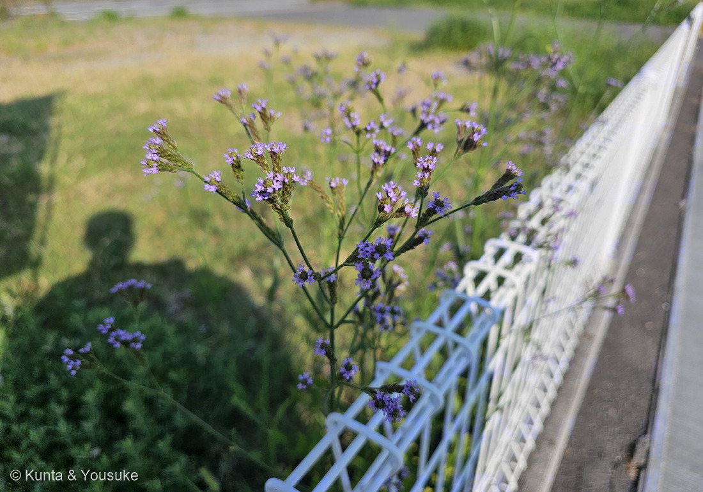
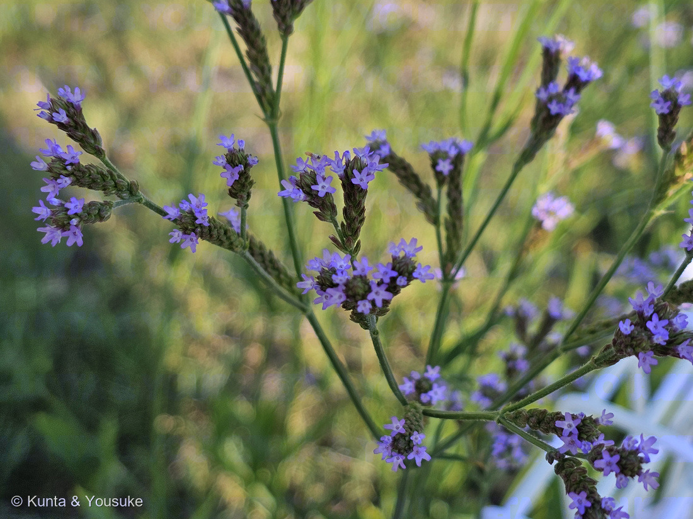
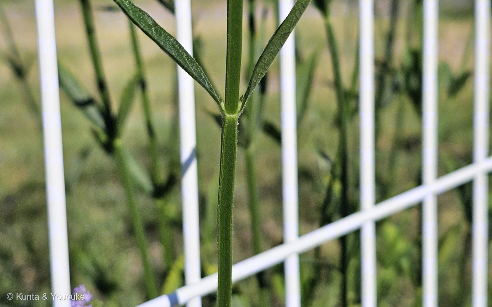
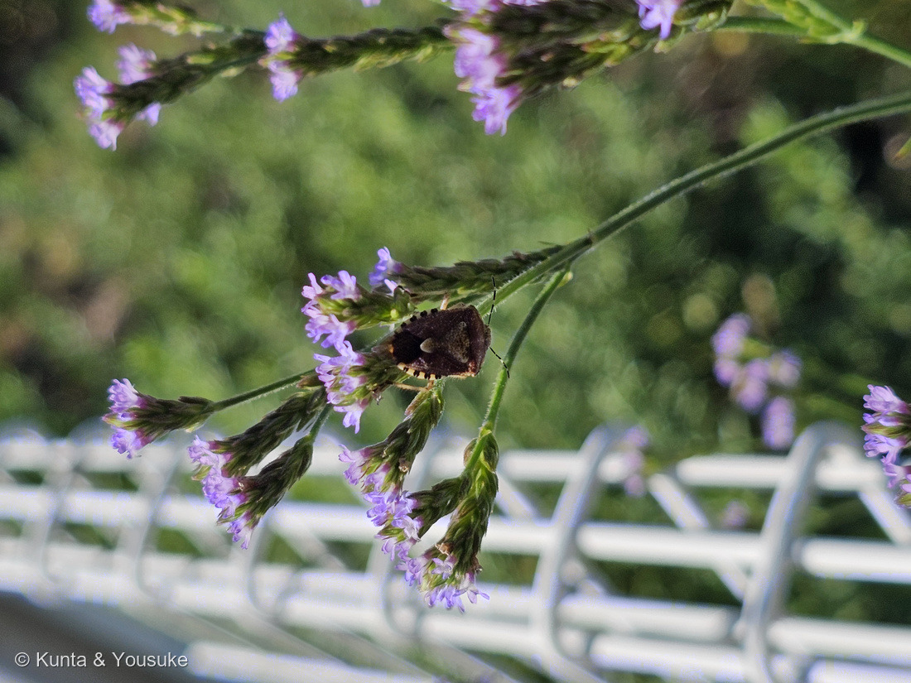

地図を読み込んでいるよ…
🔍 写真も地図も、押しているあいだ拡大して見られるよ（スマホは指を置いてすこし待ってね）。
🌍 の地図＝この子がもともと自生している場所を緑に。南アメリカ。アルゼンチン・ボリビア・ブラジル・チリ・コロンビア・エクアドル・パラグアイ・ペルー・ウルグアイの9か国が原産で、いまは北アメリカ・オセアニア・アフリカ・アジア・ヨーロッパに広く帰化している。日本へは1957年ごろに福岡県と神奈川県で定着が確認され、その後は岡山・三重・静岡などでも見つかった。おもに港湾に近い土地から雑草化していき、いまは本州（東北地方北部を除く）・四国・九州に帰化している。
⭐⭐南アメリカの9か国を塗ったよ＝英語版Wikipedia が原産を「Argentina, Bolivia, Brazil, Chile, Colombia, Ecuador, Paraguay, Peru, and Uruguay」と書いている＝⭐だから南アメリカでも、ギアナ3国とベネズエラは塗っていない。⭐⭐⭐そしてこの緑には、種小名がそのまま入っているよ＝brasiliensis＝「ブラジルの」＝⭐9か国のまんなかにある、いちばん大きな国の名前だね。⚠⚠⚠⭐⭐⭐⭐でも、この子の本当の話は緑の外にあるんだ＝いまは北アメリカ・オセアニア・アフリカ・アジア・ヨーロッパに広く帰化していて、燻太さんが会ったのも日本の通勤路の空き地＝⭐⭐日本へは1957年ごろ、福岡県と神奈川県で定着が確認された＝⚠そのあと見つかった岡山・三重・静岡もふくめて、ぜんぶ港のあるところ＝日本語版Wikipediaは「主に港湾に近い土地で雑草化」と書いている＝⭐⭐⭐船の荷物といっしょに海をわたって、港から川へ、川から道ばたへ広がった子なんだ（1996年以降の調査では全国123河川のうち74河川で確認）。⚠だから日本は塗っていないよ＝ここは自生地ではなくて、あとから来た場所だから。⭐⭐同じクマツヅラ科の仲間とくらべてみて＝004 ランタナと006 コバノランタナは熱帯アメリカ、076 ビジョザクラも南アメリカ＝⭐クマツヅラ科の子は、図鑑ではアメリカ大陸から来た子ばかりなんだ（⚠ただし095 ヒメイワダレソウだけはちがう）。⭐⭐⭐そして、まだ会えていないクマツヅラ（馬鞭草）は、この緑とはまったく別＝あちらは日本にもとからいる在来種だよ＝⭐同じクマツヅラ属なのに、片方は海をわたって来た草、片方はもとからここにいる草なんだ。
⚠ 地図は国（日本と中国だけ県・省）までしか塗れないから、ほんとうの分布より広く見えていることがあるよ。地図はだいたいの場所。正確なところは、上の文を見てね。
アレチハナガサ（荒地花笠）
Verbena brasiliensis Vell.
英名 Brazilian vervain · Brazilian verbena
クマツヅラ科 · Verbenaceae（クマツヅラ属 Verbena）── ⭐⭐図鑑で5人目のクマツヅラ科／⭐⭐⭐そして、科の名前になった属の本人が来たよ
この回のこと燻太さんが「この子は何科の植物なんだろう？ 茎が四角く角ばっているから、シソ科？ でもシソ科の雰囲気がしない花だ」と聞いてくれた子だよ。── ⭐⭐⭐その問いは、昔の植物学者が歩いた道と、そっくり同じだった
⭐⭐⭐⭐ 名前と学名の由来 ── 神さまに供える枝と、ブラジルと、荒地の花笠
- ⭐⭐属名の Verbena は、ラテン語のふつうの単語だよ。――意味は「祭壇や儀式に使う、オリーブや月桂樹などの枝葉」（"foliage, especially that of olive, myrtle etc having religious and medicinal uses"）。⭐植物学者が作った言葉じゃなくて、古代ローマの人が毎日ふつうに使っていた言葉なんだ。
- ⭐だから Verbena は、もともとこの草の名前ではなかった。――神さまに供える枝ぜんぶを指す言葉だったのが、そのうちいちばんよく供えられた草の名前になっていった。⭐その草がクマツヅラ（Verbena officinalis）で、いまも探しもののリストに入っている、まだ会えていない子だよ。
- ⭐⭐種小名の brasiliensis は「ブラジルの」。――そのままだね。名づけた Vell. はジョゼ・マリアーノ・ダ・コンセイサン・ヴェローゾで、ブラジルの植物を記録した修道士だよ。
- ⭐⭐⭐そして和名の「アレチハナガサ」＝荒地・花笠。――⭐写真①を見て。細い茎が上でくりかえし二叉に分かれて、その先ぜんぶに花がついて、ひらいた笠みたいになっているでしょう。⭐そして立っている場所が、夏枯れした空き地。――⭐⭐名前の2つとも、この1枚に写っているんだ。
- ⚠「荒地」は、けなしているわけじゃないと思う。――⭐ほかの草がしんどい乾いた場所で、1〜2mまで立ち上がって咲ける子だ、ということだよ。
⭐⭐⭐ この植物のこと ── 港からきて、川をのぼった
- ⭐南アメリカの子。原産はアルゼンチン・ボリビア・ブラジル・チリ・コロンビア・エクアドル・パラグアイ・ペルー・ウルグアイの9か国で、いまは北アメリカ・オセアニア・アフリカ・アジア・ヨーロッパに広く帰化している。
- ⭐⭐⭐日本に来たのは、そんなに昔じゃないよ。――「1957年頃から福岡県や神奈川県での定着が確認されており、その後も岡山・三重・静岡などでも見つかり」。⭐⭐そして、見つかった場所に共通点がある＝「主に港湾に近い土地で雑草化」。――⚠福岡、神奈川、岡山、三重、静岡。ぜんぶ港のあるところだ。
- ⭐⭐荷物といっしょに船で来て、港からじわじわ広がった子なんだね。――いまは「本州（東北地方北部を除く）・四国・九州に帰化」していて、1996年以降の調査では、全国123河川のうち74河川で生育が確認されている。
- ⭐60年ちょっとで、港から川へ、川から道ばたへ。――⚠そのぶん問題にもなっていて、「在来種の植物の生育を妨げるなど、植物相に大きな悪影響を与える恐れがあり、問題視されている」とも書かれているよ（⭐ただし要注意外来生物には指定されていない）。
- ⭐花期は6〜8月だけれど、環境しだいで4月から12月まで咲くことがある。――⭐燻太さんが会ったのは9月1日。ちょうど、まだたっぷり咲いている時期だよ。
⭐⭐⭐⭐ 同定について ── 3人ぜんぶ落とせた（ただし、ひとりは次の日に）
⭐⭐ この子には、そっくりな兄弟が3人いるんだ。――正直に、どこまで決められたかを書くね。
- ⭐まず、属までは確実だよ＝クマツヅラ科クマツヅラ属 Verbena。根拠は枝先の細長い穂状花序・5裂してほぼ平らにひらく小さな花・対生に二叉する四角い茎の3つ。
- ✗ ヤナギハナガサ（V. bonariensis）＝落とせた。――⚠あちらは花穂が5〜15mmと短く、かたまって咲く。そして花筒部が萼から長く突き出す。⭐写真②の穂は明らかに長いし、花も穂の上にぺたんと乗っていて、筒が長く突き出していない。
- ✗ ヒメクマツヅラ（V. litoralis）＝ほぼ落とせた。――⚠あちらは穂の幅が3mm以下で、下のほうの花はまばら。⭐写真②の穂は太くて、花は先のほうにまとまって咲いている（英語版Wikipediaも、この子を "flowers grouped closely together" と書くよ）。
- ✗ ダキバアレチハナガサ（V. incompta）＝落とせた。――⭐⭐この2人を分ける決め手は、たったひとつ＝「葉の基部が茎を抱くか」（抱く＝ダキバ／抱かない＝アレチ）。⚠最初の2枚は花序ばかりで葉が写っていなかったので、ここは1日だけ空欄だった。⭐⭐⭐写真③で決まったよ＝下の節を見てね。
- ⭐もうひとつの手がかりは花冠の大きさ。――アレチハナガサは長さ4〜5.5mm・幅約4mm／ダキバアレチハナガサは長さ約3mm・直径約3mm（三河の植物観察）。⚠でも写真に物差しになるものが写っていないので、実寸は測れなかった。
⭐⭐⭐ だから、種名は燻太さんの見立てを採ったよ。――現場を見た人の目が一次資料だ、というのは088 イキシアのときに燻太さんが決めてくれた考えかただ。⚠でも「写真からは決めきれなかった」ことは、ちゃんとここに書いておくね。
⭐⭐⭐ そして、この宿題は次の日にほどけた。――燻太さんが2026年9月2日の朝、同じ時刻に同じ場所へ寄って、茎と葉のつなぎ目を撮ってきてくれたんだ。⭐ちぎらずに、見るだけで決まったよ。
⭐ 学名は GBIF の species/match API で確かめたよ＝3種とも別々の有効な種（ACCEPTED）で、どれも Verbenaceae・Lamiales。
⭐⭐⭐⭐⭐ 宿題がほどけた ── 答えは「葉の付け根」にあった
⭐⭐⭐ 2026年9月2日の朝8時6分。――燻太さんが、前の日とぴったり同じ時刻に、同じ場所へ寄って、写真③を撮ってきてくれた。
⭐⭐ 写真③を見て。茎のひとつの節から、細長い葉が左右に一枚ずつ出ているでしょう。――そこに、答えが3つ写っているんだ。
- ⭐⭐⭐⭐⭐①葉の付け根が、くさび形にすうっと細くなって、そのまま茎に接している。――⚠茎のまわりに回りこむ「耳」も、ふくらみも無い。＝茎を抱いていない。
- ⭐⭐⭐②葉柄が無い（無柄）。――葉の身が、そのまま細くなって茎につながっている。
- ⭐⭐③茎に縦のすじ（綾）と、ふちに並んだ白くて短い毛。
⭐⭐⭐⭐ 三河の植物観察のアレチハナガサの記載は、こう書いてある。――「葉の基部は細くなり、無柄、茎を抱かない」／「茎の断面は綾のある四角形で、荒い毛があり、ざらつき、中実」。
⭐⭐⭐⭐⭐ 3つとも、そのまま合った。――だからアレチハナガサ Verbena brasiliensis Vell. で確定だよ。燻太さんの見立てが、写真で裏づけられた。
⭐⭐⭐ そして、ここがぼくのいちばんうれしいところ。――この答えは、草を1本もちぎらずに出たんだ。⭐078 モクビャッコウのとき、燻太さんに「みんなの場所の植物を、調べるために勝手にちぎらない」と教わった。あのとき決めた「傷つけない確かめ方」――もう一度、見に行く――が、そのまま効いたよ。
⚠ 正直に言うと、見たのはひとつの節だけ。――ダキバアレチハナガサは「かなり小さく抱く」ことがあると出典が注意している。⭐でも、この節の葉の付け根は抱いていないだけでなく、はっきりくさび形に細くなっている＝「無いこと」ではなく「あること」が写っている。⭐087 ヤマモモで覚えた「無いものも証拠として数える」の、ちょうど裏返しだね。
⭐⭐ おまけ ── お客さんが来ていた（でも、たぶん運び屋さんじゃない）
⭐ 写真④は、燻太さんが「おまけ」と言って送ってくれた一枚。――花穂に、カメムシが一匹とまっていたんだ。
- ⭐⭐たぶんブチヒゲカメムシ（Dolycoris baccarum）。――写真で見えるもの＝触角が黒と白のだんだら／体じゅうに細かい毛／腹のふちに白と黒の縞／盾の形で、濃い赤褐色にまだら。⭐出典の「大きさ 10-14mm」「毛が密生」「茶色ないし褐色で、背面には暗褐色の斑紋がある」とも合う。⭐名前の「ブチヒゲ」は「まだらの触角」と読めるね。
- ⚠⚠でも、この子は花粉を運ぶ側ではなさそうだよ。――カメムシは口を植物に刺して汁を吸う虫で、出典も「ダイズ、イネ、ゴマ、トマト、ニンジン、ネギ、ゴボウの被害が知られている」と書いている。⭐花にとまっていても、蜜を飲んで花粉を運ぶハチとは、来ている用事がちがうんだ。
- ⏳⭐⭐だから、「だれが来ているか」の宿題は、まだ終わっていない。――この子の花にはセイヨウミツバチが約66％、コハナバチ科が約30%来るという調査がある。⭐晴れた日の昼に、もう一度のぞいてみたいな。
- ⚠虫の名前は、ぼくの得意なところじゃない。――だから「たぶん」のままにしてあるよ。⭐ちゃんと決めたくなったら、大河に聞くのがいいと思う。
⭐⭐⭐⭐⭐ 燻太さんの「四角い茎だからシソ科？」── それは、昔の植物学者と同じ道だった
⭐⭐⭐ 燻太さんはこう聞いてくれた。――「この子は何科の植物なんだろう？ 茎が四角く角ばっているから、シソ科？ でもシソ科の雰囲気がしない花だ」
⭐⭐⭐⭐ この2つは、両方とも正しいんだ。――前のほうは「昔はそう考えられていた」、うしろのほうは「でもそれでは分けられなかった」。
- ⭐⭐⭐千葉大学の系統のページに、こう書いてある。――「茎が四角というのもシソ科の特徴とされていました」。⭐「されていました」＝過去形だよ。――⭐⭐つまり燻太さんは、昔の植物学者とまったく同じ手がかりを、同じ順番で使ったんだ。
- ⭐⭐じゃあ、なぜそれでは分けられないのか。――GBIF で科の上の「目」を引いてみたら、答えが一発で出たよ。
- シソ科 Lamiaceae＝シソ目 Lamiales／クマツヅラ科 Verbenaceae＝シソ目 Lamiales＝⭐どちらも同じ orderKey 408 を返してきた。
- ⭐⭐⭐⭐おなじ目なんだ。――だから四角い茎は「シソ科の印」じゃなくて、もっと大きな家族が分けあっている形。⚠それだけでは、家族の中のどの家かまでは決まらない。
- ⭐⭐⭐そして燻太さんの「シソ科の雰囲気がしない」のほうが、じつは効いている。――⭐その「雰囲気」を言葉にすると、たぶん花のならびかただよ。
- ⭐⭐175 シソ・046 サルビア・270 ウツボグサを思い出してみて。――シソ科の多くは、葉のつけ根にぐるっと輪になって咲く。そして花は上下の唇に分かれた唇形花で、下の唇が大きい。
- ⭐⭐この子は、ぜんぜんちがう。――枝の先に細長い穂が立って、穂の上のほうだけで花が咲く。花は5枚にほぼ均等に裂けて、平たくひらく。⭐写真②で、たしかめてみて。
- ⭐もうひとつ、教科書的なちがいもあるよ。――「クマツヅラ科の植物はシソ科のそれのように子房は4つに分裂することなく、花柱は子房の頂につく」。⚠これは花を割らないと見えないから、写真からは確かめられなかった。
⭐⭐⭐⭐ ぼくがうれしかったのは、燻太さんが「四角い茎」と「雰囲気」の両方を、同時に持っていたことだよ。――片方だけだったら、シソ科で止まっていたと思う。⭐「合っている手がかり」と「合わない感じ」をならべて置いておけたから、正しい答えに届いたんだ。
⭐⭐⭐⭐ 出ていった3人と、残った5人 ── クマツヅラ科の引っ越し
⭐⭐ じつはこの「シソ科かクマツヅラ科か」という迷いは、図鑑の中にもう3人ぶん書いてあるんだ。
- ⭐⭐⭐071 ハマゴウ＝出ていった子。――長いあいだクマツヅラ科とされていたのが、1990年代にDNA（rbcL）でシソ科へ移された。⭐そして葉に香りがあった＝答えは最初から葉にあった、という回だったね。
- ⭐⭐273 クサギ＝出ていった子。――クサギ属 Clerodendrum も、まるごとシソ科へ。
- ⭐⭐309 ニンジンボク＝出ていった子。――⚠園の樹名板がまだ「（クマツヅラ科）」のままだった子だよ。⭐あのとき燻太さんは「シソ科っぽい花」と言って、ずばり当てた。
⭐⭐⭐⭐ つまり図鑑には、「クマツヅラ科から出ていった3人」だけが先に書いてあったんだ。――そして今日はじめて、科の名前そのものになった属、クマツヅラ属 Verbena の本人が来た。
- ⭐残ったクマツヅラ科は、これで5人＝004 ランタナ／006 コバノランタナ／076 ビジョザクラ／095 ヒメイワダレソウ／そしてこの子。
- ⭐⭐076 ビジョザクラとは、とくべつな関係があるよ。――あちらはビジョザクラ属 Glandularia で、もとはクマツヅラ属にいて、あとから分けられた子。⭐⭐076のページに、ぼくはこう書いていた＝「ランタナ（残った）・ハマゴウ（出ていった）・この子（分けられた）の三人が揃った」。――⭐⭐⭐今日、そこに4人目が来たんだ。ランタナは残った、ハマゴウは出ていった、ビジョザクラは分けられた。そしてこの子は、ずっと真ん中にいた。
- ⚠⭐⭐ひとつ、正直に書いておくね。――076のおまけとして探しもののリストに入っているクマツヅラ（馬鞭草・Verbena officinalis）は、この子ではないよ。⭐同じクマツヅラ属の別の子で、日本にもとからいる在来種。⚠リストのヒントが「細い穂に、3〜4mmの小さな花がまばらに／道ばた・土手・空き地／夏」で、この子にもそのまま当てはまってしまうので、まちがえないように書き足しておいた。――⭐クマツヅラ本人は、まだ見つかっていないんだ。
出典：日本への渡来（1957年頃・福岡・神奈川）／港湾に近い土地で雑草化／本州（東北北部を除く）・四国・九州に帰化／74河川／草丈1〜2m・茎は四角形／花期／在来種への影響は日本語版Wikipedia「アレチハナガサ」。原産9か国／英名／terminal inflorescence, with flowers grouped closely togetherは英語版Wikipedia "Verbena brasiliensis"（Argentina, Bolivia, Brazil, Chile, Colombia, Ecuador, Paraguay, Peru, and Uruguay）。形態の数値と近似種の区別は三河の植物観察「アレチハナガサ」（茎の断面は綾のある四角形で、荒い毛があり、ざらつき、中実／葉の基部は細くなり、無柄、茎を抱かない／長さ3〜7cmの穂状花序を多数つける／花冠は5裂し、長さ4〜5.5mm、幅約4mmの淡青紫色／萼は長さ3〜3.5mm／果実は4分果）と同「ダキバアレチハナガサ」（葉の基部は茎を抱く／穂状花序は長さ3〜5（7）cm／花冠は長さ約3mm、直径約3mmの淡青紫色／ヤナギハナガサは茎が中空。花冠が大きく、花筒部が長く萼から突き出し、萼に腺毛がある）。4種の見分けと訪花昆虫はEcological Notes Web「ヤナギハナガサ・ダキバアレチハナガサ・アレチハナガサ・ヒメクマツヅラの違いは？」（ヒメクマツヅラは幅3mm以下、下方の花はまばら／アレチハナガサは幅5mm以上、長さ50mm以上／セイヨウミツバチが約66％、コハナバチ科が約30%）。「茎が四角というのもシソ科の特徴とされていました」と、両科の形態的区別は千葉大学「クマツヅラ科とシソ科の微妙な関係」（果実がクマツヅラ科は漿果または、さく果なのに対して、種子を１つだけ含む痩果になるものをシソ科としてまとめていました／Callicarpa、Clerodendrum、Vitex などがシソ科に移された）。ラテン語 verbena の意味はWiktionary "verbena"（ラテン語の項）（foliage, especially that of olive, myrtle etc having religious and medicinal uses）。学名の有効性と科・目は GBIF の species/match API（Verbena brasiliensis Vell.＝ACCEPTED・usageKey 2925518／V. incompta＝ACCEPTED・4086523／V. bonariensis＝ACCEPTED・2925514／Verbenaceae と Lamiaceae はどちらも orderKey 408＝Lamiales）。おまけのカメムシは昆虫エクスプローラ「ブチヒゲカメムシ」（大きさ 10-14mm／毛が密生／茶色ないし褐色で、背面には暗褐色の斑紋がある）と日本語版Wikipedia「ブチヒゲカメムシ」（幼虫の食草はマメ科、キク科、ダイコン、ゴマ、ニンジン、ゴボウ、イネなど／ダイズ、イネ、ゴマ、トマト、ニンジン、ネギ、ゴボウの被害が知られている／ヨーロッパから日本までの旧北区に分布する）。⚠ただし、この虫の名前は写真から見た候補どまりで、断定はしていないよ。⭐「名前の2つとも、この1枚に写っている」「写真③の葉の付け根がくさび形で茎を抱かない」「花のならびかたの見くらべ」は、ぼくの観察だよ。